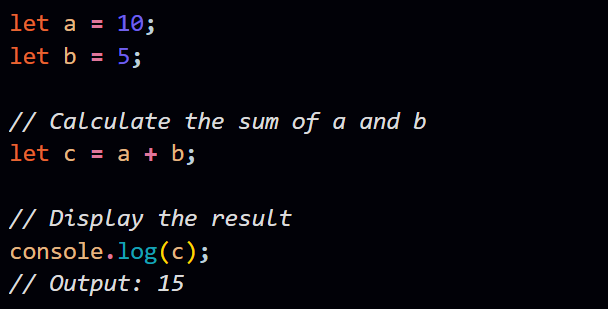
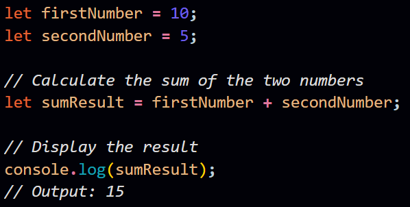

Q. Explain the importance of comments in JavaScript and provide examples of single-line and multi-line comments.
Ans.
Choosing meaningful and descriptive variable names in JavaScript is
crucial for writing code that is easy to understand, maintain, and
collaborate on. Clear identifiers improve code readability by conveying
the purpose and intent of variables, making it easier for developers
(including yourself) to grasp the functionality of the code. Here are
some key reasons why meaningful variable names are important:
-
Readability:
Descriptive variable names make code more readable. When someone reads your code, they should be able to understand the purpose of a variable without having to refer to extensive documentation. -
Maintainability:
Code is read more often than it is written. When you or other developers revisit the code for maintenance or updates, clear variable names significantly reduce the cognitive load and make it easier to comprehend the logic. -
Understanding Intent:
Meaningful variable names convey the intent of the code. Developers can quickly grasp the purpose of a variable and its role in the overall functionality. -
Reducing Bugs:
Misunderstandings due to unclear variable names can lead to bugs. When variables are named with precision, the likelihood of introducing errors or misunderstanding the code is minimized. -
Collaboration:
When working in a team, descriptive variable names facilitate collaboration by providing a shared understanding of the codebase. Team members can quickly understand each other's contributions.
Examples:
Consider the following code snippet with poorly named variables:
In this snippet, the variable names (a, b, and c) are not meaningful. While the code performs a simple addition and displays the result, it lacks clarity about what the numbers represent.
Now, let's improve the code by using meaningful variable names:
In this improved version, variable names (firstNumber, secondNumber, and sumResult) clearly convey the purpose of each variable. It's now evident that we are working with two numbers and calculating their sum. This not only improves readability but also helps in maintaining a clear understanding of the code's intent.